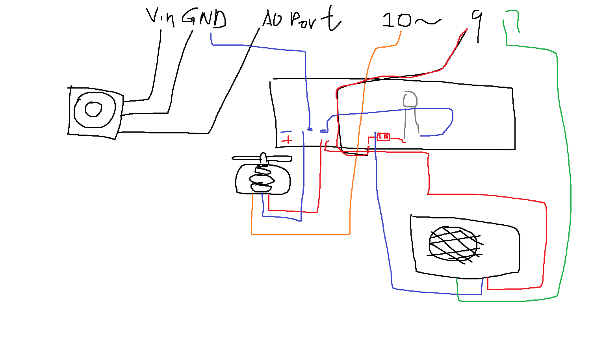
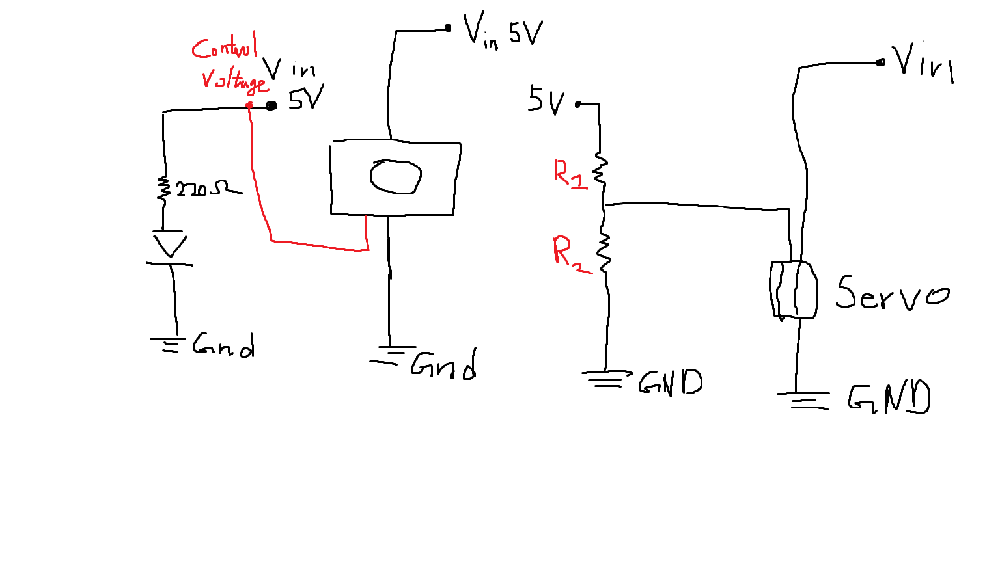
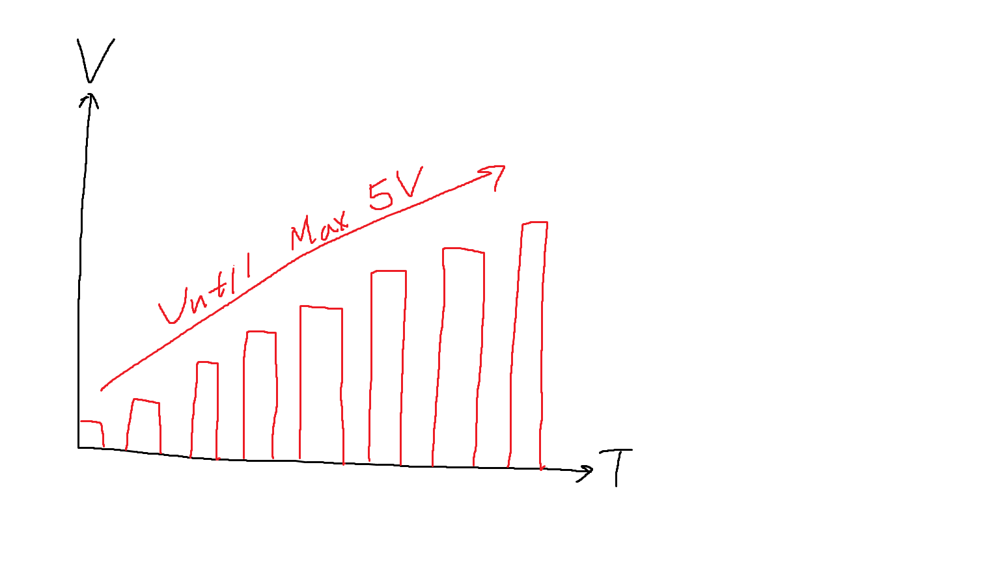

Here are the graphs representing this circuit
This represents my circuit
This represents my circuit schematic
This represents the voltage graph of the circuit over time for voltage divider
include // Library Moduels
Servo myservo; // Create an instance of the class
int analogX = A0; // Initialize Analog Variable
int sensorInput = 7; // Initialize Motion Sensor Input Variable
int pirState = LOW; // Initialize Motion Sensor State Variable
int valX; // Initialize Servo State Varaible
int pirVal; // Initialize Motion Sensor Varaible
int ledOutput = 12; // Initialize LED Output Channel
void setup() {
pinMode(sensorInput, INPUT); // Init
pinMode(ledOutput, OUTPUT); // Init
myservo.attach(9); // Attach the listening port to servo object
Serial.begin(9600); // Begin recording for listening messages.
Serial.println("Trial Begins!"); // Trial println statement
}
void loop() {
pirVal = digitalRead(sensorInput);
if (pirVal == HIGH) { // If the current motion detected
digitalWrite(ledOutput, HIGH);
delay(500); // Light up the LED
if (pirState == LOW) { // If the current state is different from detection
Serial.println(" Motion Detected! "); // Update
pirState = HIGH;
}
}
else {
digitalWrite(ledOutput, LOW); // If the current motion detected is LOW or NO
delay(500); // Turn off the LED
if (pirState == HIGH) { // Re adjust the value of current motion state if they do not match
Serial.println(" Motion Ceased! ");
pirState = LOW; // Print in serial to better track them
}
}
valX = analogRead(analogX); // Map the analog input range of joystick to the range of servo motors
valX = map(valX, 0, 1023, 0, 180); // Mapping
myservo.write(valX); // Activate the servo motor.
delay(15);
}
Here is the code for this project with commenting!
Here are some additional Questions:
int readReliableSensor() {
int readings[5];
for (int i = 0; i < 5; i++) {
readings[i] = analogRead(A0);
}
// Sort readings
sort(readings, 5);
// Take median (robust against outliers)
return readings[2];
}
float alpha = 0.1; // smoothing factor (0–1)
float smoothedValue = 0;
void loop() {
int raw = analogRead(A0);
smoothedValue = alpha * raw + (1 - alpha) * smoothedValue;
// use smoothedValue for control
}